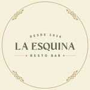
Justificación de las decisiones de UX y UI del sistema de gestión y la presencia digital de un resto bar de barrio.
La Esquina es un resto bar de barrio. El producto digital resuelve dos necesidades en una identidad común: gestionar la operación diaria (pedidos, clientes, productos, repartidores y reportes) y captar clientes a través de una landing pública con un formulario de contratación del servicio de comida y delivery.
Las comandas, el delivery y el cierre de caja se manejaban con papel y planillas. Se necesitaba un panel rápido, legible y usable desde el celular en plena cocina.
Una cara pública atractiva que transmita la identidad del local y convierta visitas en pedidos de catering, eventos y delivery, con contacto directo por WhatsApp.
Mira métricas del día, controla estados y exporta balances. Prioriza claridad y velocidad.
Carga comandas a toda velocidad desde el celular o la tablet. Prioriza objetivos táctiles grandes.
Llega a la landing, conoce el local y deja su pedido o consulta sin registrarse.
index.css) gobierna las 10+ pantallas, garantizando coherencia entre el back-office denso de datos y la landing emocional de marca.La navegación separa con claridad lo público de lo operativo. El usuario nunca se pierde: barra lateral persistente, breadcrumbs en cada pantalla interna y un skip-link de accesibilidad para saltar al contenido.
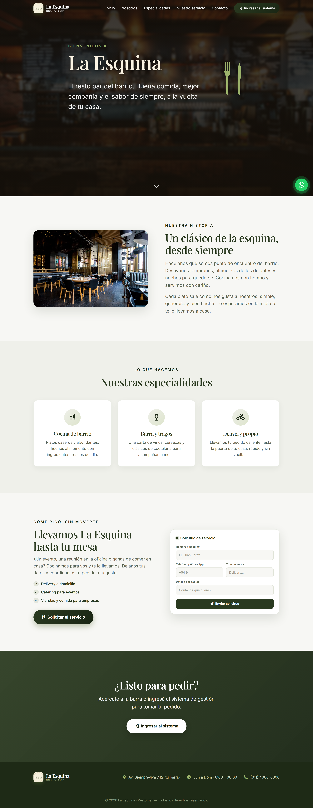
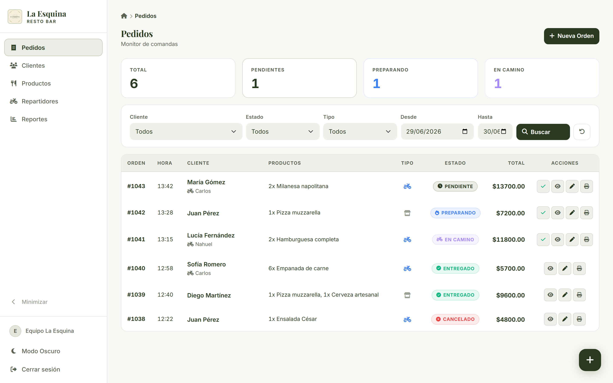
El monitor de pedidos abre con tarjetas de métricas (total, pendientes, preparando, en camino) antes que la tabla. Quien entra entiende el estado de la cocina en menos de un segundo, sin leer fila por fila.
Cada pedido lleva un badge con color e ícono propios (pendiente, preparando, en camino, entregado, cancelado). El color no es el único canal: ícono + texto aseguran lectura para daltonismo.
Cliente, estado, tipo y rango de fechas viven en un panel fijo sobre la tabla. En mobile se colapsan para no robar altura.
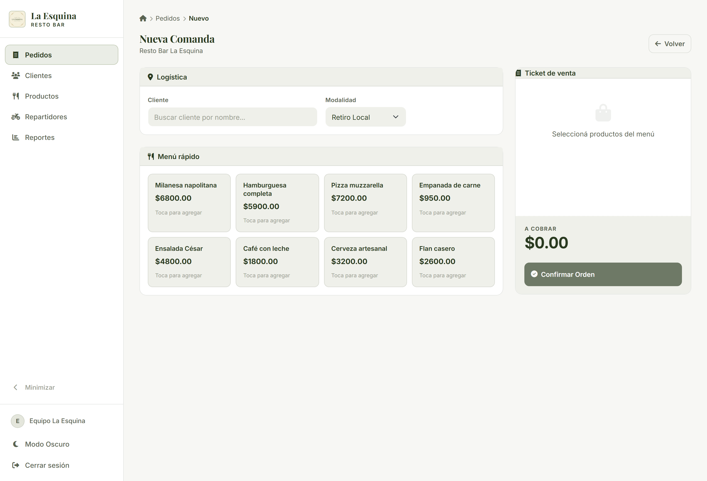
Cuando no hay datos, mostramos ícono, mensaje y la acción siguiente ("creá una nueva orden"), nunca una tabla vacía y muda.
Las tablas se transforman en tarjetas; el POS usa pestañas; aparece un FAB y una topbar. Objetivos táctiles ≥ 44px.
Toasts de éxito/error, spinners de carga, validación en línea con is-invalid y foco de teclado visible.
El formulario original de alta era largo (usuario, empresa, razón social, CUIT, dos contraseñas, captcha, logo…). Para la landing lo reducimos a lo esencial: el objetivo no es crear una cuenta, es iniciar una conversación comercial. Menos campos = menos abandono.
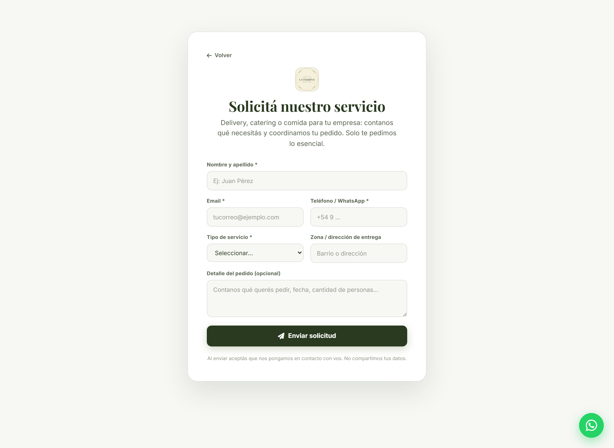
Contraseñas, captcha, carga de logo, datos fiscales. Fricción alta para un primer contacto.
Nombre, email, teléfono, tipo de servicio, zona y detalle. Conversión sobre burocracia.
La paleta busca una identidad sofisticada, artesanal y madura, alejada del rojo/amarillo saturado del fast-food. El verde evoca lo natural, fresco y de barrio; el fondo hueso aporta calidez y descanso visual para jornadas largas frente a la pantalla.
Las normas WCAG piden contraste ≥ 4.5:1 (AA) y ≥ 7:1 (AAA) para texto. El olivo daba buen contraste pero se quedaba en AA. Por eso migramos todo el texto y los rellenos de botones al verde bosque, llevando la lectura a nivel AAA — clave en una app que se lee a contraluz, en cocina y desde el celular.
| Combinación | Uso | Ratio | Nivel |
|---|---|---|---|
| Bosque #2A3A20 sobre hueso | Títulos, datos, números | 12.1 : 1 | AAA |
| Blanco sobre bosque #2A3A20 | Botones "Nueva Orden", "Buscar" | 12.6 : 1 | AAA |
| Olivo #556B2F sobre hueso (antes) | Texto y botones — reemplazado | 5.9 : 1 | solo AA |
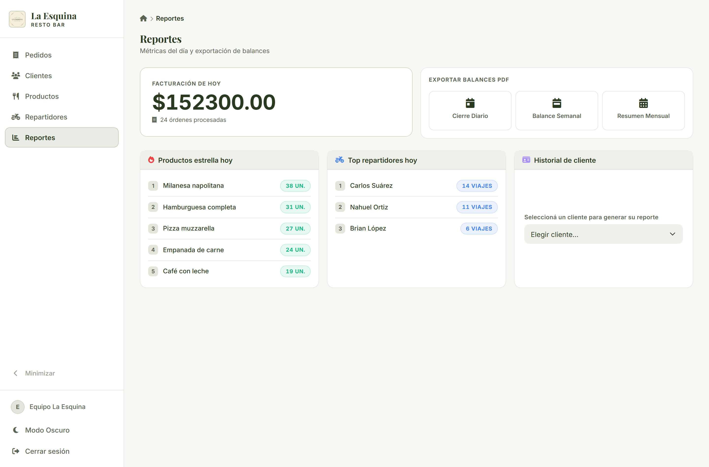
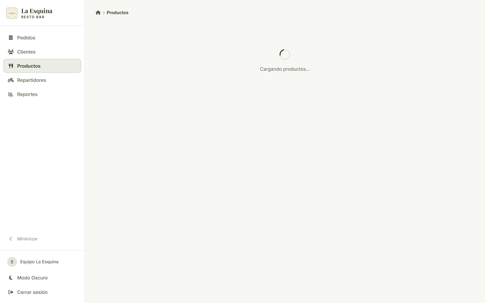
Una serif elegante para la identidad y una sans limpia para los datos. La combinación da personalidad sin sacrificar legibilidad.
Los números usan font-variant-numeric: tabular-nums para que precios y totales se alineen en columna — fundamental en tablas y tickets.
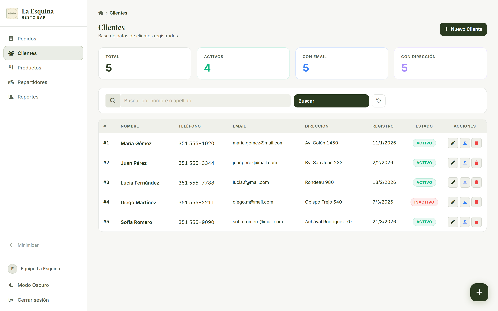
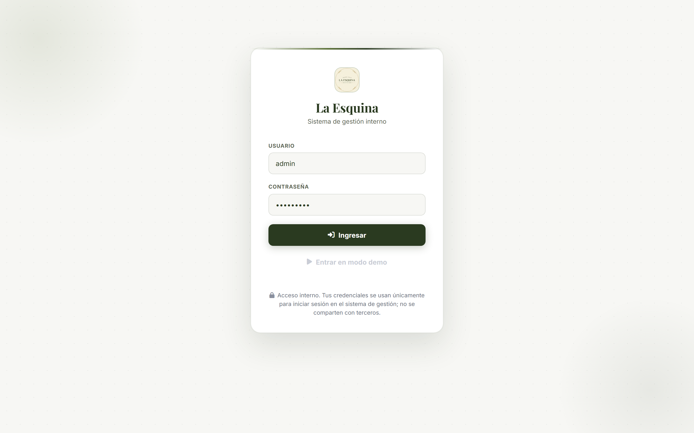
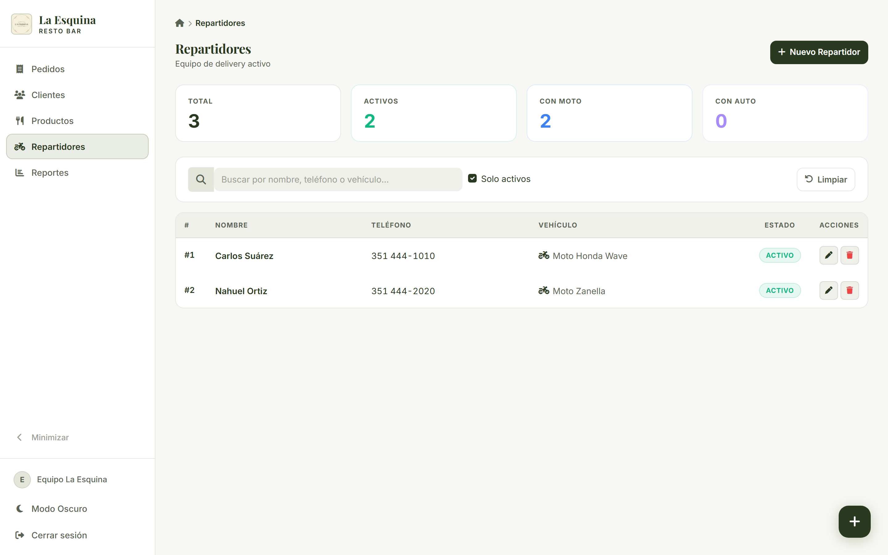
En el salón se trabaja con el celular en la mano. No "achicamos" el escritorio: rediseñamos cada listado como tarjetas apiladas, con la información priorizada y acciones táctiles grandes. El POS adopta pestañas y aparece un menú hamburguesa con topbar.
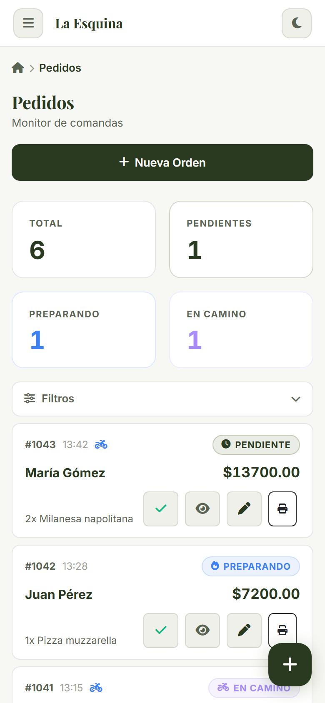
alt en imágenes, íconos decorativos aria-hidden<main>htmlFor/id), aria-label en buscadoresprefers-reduced-motion respetadoLa Esquina demuestra que un back-office puede ser tan cuidado como una landing de marca cuando ambos nacen del mismo sistema de diseño.
Jerarquía de lo general a lo específico, estados inequívocos, mobile real, captación sin fricción y feedback en cada acción.
Verde bosque sobre hueso con contraste AAA, doble voz tipográfica serif/sans y componentes consistentes gobernados por tokens.
Buena comida, mejor compañía — y una experiencia digital a la altura.